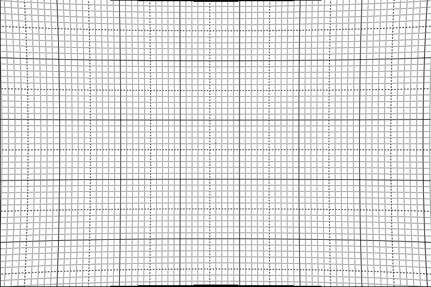
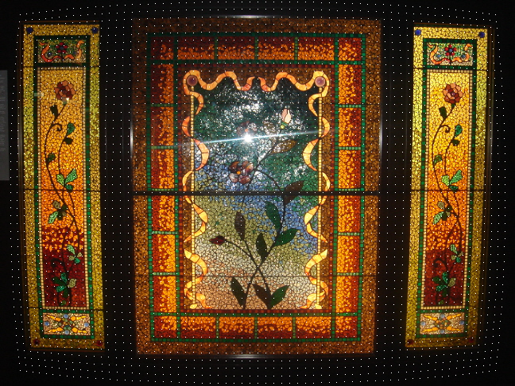

| Description | Name | Type | Limits | Default |
| Input clip | clip | RGB or planar YUV444 or Y format only | none | |
| coefficient a (xa in independant mode and start val in test mode) | a | float | between 0.0 and 0.5 | 0.005 |
| coefficient b(xb in independant mode and start val in test mode) | b | float | between 0.0 and 0.5 | 0.005 |
| coefficient c(xc in independant mode and start val in test mode) | c | float | between 0.0 and 0.5 | 0.005 |
| whether to correct pin cushion or barrel type distortion | pin | Boolean | true for pin, false for barrel | false |
| vertical to horizontal distortion ratio | vh | float | between 0.1 and 10 | 1.0 |
| whether in test mode | test | Boolean | true for test, false for normal | false |
| end value of coefficient a in test mode(xea in independant mode) | ea | float | between 0 and 0.5 | a |
| end value of coefficient b in test mode(xeb in independant mode) | eb | float | between 0 and 0.5 | b |
| end value of coefficient c in test mode(xec in independant mode) | ec | float | between 0 and 0.5 | c |
| number of steps for variation ( in test mode only) | nsteps | integer | between 0 and 100 | 20 |
| input frame number for over lay ( in test mode only) | frame | Int | within input clip | 0 |
| color of dots in test mode and left out borders in normal | color | Int | in RRGGBB format | 0 |
| whether x and y have independant coefficients | ind | Boolean | true for independant, false for pin cushion or barrel | false |
| whether Y direction has pin cushion distortion? | ypin | Boolean | true for pin cushion, false for barrel | false |
| value of coefficient ya ( start value in test mode ) | ya | float | between 0 and 0.5 | a |
| value of coefficient yb (start value in test mode) | yb | float | between 0 and 0.5 | b |
| value of coefficient yc (start value in test mode) | yc | float | between 0 and 0.5 | c |
| end value of coefficient ya ( in test mode only) | yea | float | between 0 and 0.5 | ya |
| end value of coefficient yb ( in test mode only) | yeb | float | between 0 and 0.5 | yb |
| end value of coefficient yc ( in test mode only) | yec | float | between 0 and 0.5 | yc |
| dot density( in test mode only) | dots | int | between 1 to 4 | 2 |
#Usage examples:-
blankclip(width = 720, height = 480, pixel_type = "RGB32",color = $ffffff, length = 10) grid() pin = Barrel(a = 0.005, b = 0.005, c = 0.005,pin = false) bar = Barrel(a = 0.005, b = 0.005, c = 0.005,pin = true) test for image with independant distortions:- Barrel(test=true,pin=false, ind = true,a= 0.05,b= 0.011,c= 0.001, ea = .02, eb=0.012,ec= 0.001, ya= 0.1, yb= 0.011,yc= 0.001, yea= 0.01, yeb= 0.005, yec = 0.005 , ypin = true, color = $ffffff)Barrel Distortion Example:-

Pin Cushion Distortion Example

Pin cushion and Barrel simultaneous. Use ind = true to correct

with following script dots displayed
Barrel(im,a = 0.005, b = 0.005, c = 0.005,pin = false, test = true, color = $ffffff)

| To my index page | down loadmovePlus plugin | To Avisynth |